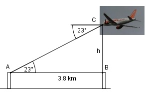

Aufgabe 76 Zwei Türme liegen 3,8 km auseinander. Ein Flugzeug befindet sich genau über dem einen und peilt von dort den anderen unter einem Winkel von 23° an. In welcher Höhe h fliegt es?

Im Dreieck ABC: h tan 23° = --------- |*3,8 km 3,8 km h = tan23° * 3,8 km = 0,4245 * 3,8 km = 1,6 km